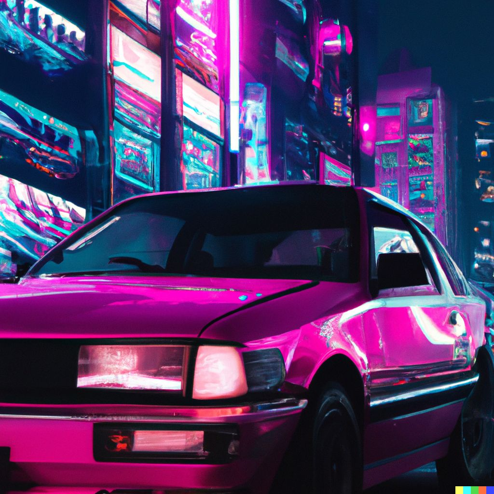
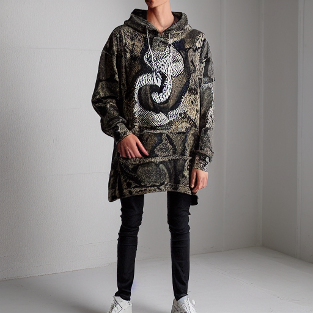
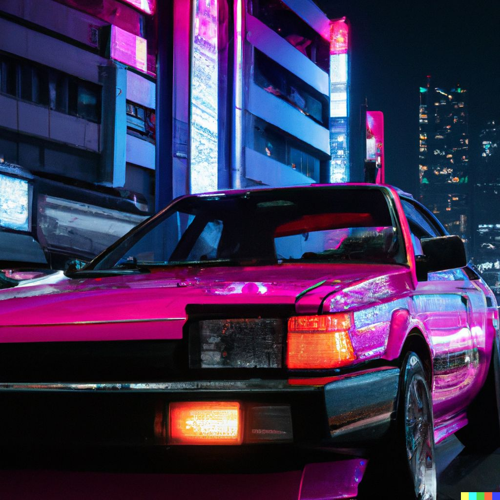

TOP 3 SEMANAL
Cantantes / Raperos
Estos fueron los mejores 3 artistas vocales de la semana.
- Car Loss
- NIHAO
-  Keny North
Productores Musicales
Productores musicales y beatmakers con más apoyo del momento.
-  Don Torcuato
 CATWALK
CATWALK-  MONTANA
Audiovisuales
Los artistas audivisuales con mayor cantidad de votos semanales
- ROBLOX
- LOWLO
 -
-
Ultimos Lanzamientos
BASSHATER
25. Productor musical "responsive". Me adapto a cualquier género.
ASTON
23 años, beatmaker amateur de la provincia de Santa Fe. He trabajado con J Dalvin y múltiples artistas del género. He aportado samples para la creación de numerosas canciones de la escena muscial Uruguaya.
NIHAO
19 años, cantante acapella inspirada en el sonido espacial y el estilo kawaii. Me adapto a varios estilos y busco inspirarme en lo que el universo tiene para brindar.
PIMPINELA
Cantante. Patriota hasta la médula, fan de la música latina y los sonidos del bosque. Especialista en canto de ardilla.